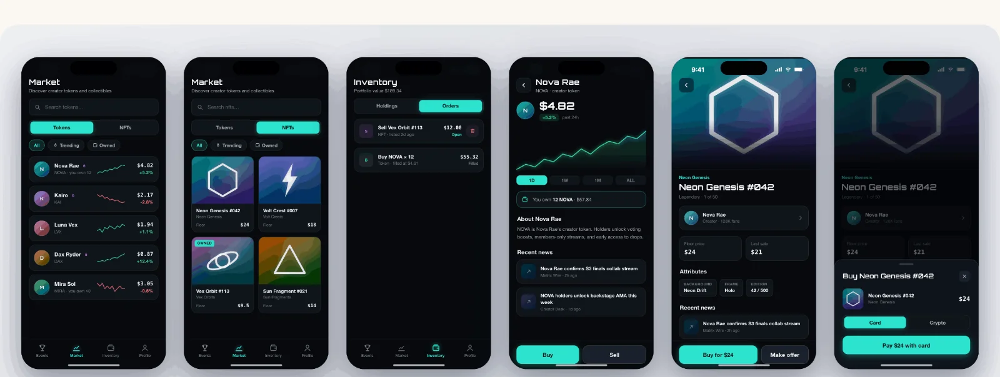

Matrix connects fans with creators through rewards and gamified engagement. Working directly with the CEO, I turned specs and the brand's existing style guide into eleven hi-fi screens for a waiting dev team, across two feature areas, in one week.
CLIENTMatrix · startup
ROLEUI designer · solo
TIMELINE1 week · 2021
TOOLSFigma
The briefSomeone else's spec, someone else's style guide (dark surfaces, neon accents), two feature areas: events & voting and tokens & NFTs. Lo-fi → team review → pixel-final, twice over.
My partAll of the design, wireframes through hi-fi, reviewed by the CEO and team. Screens use fictional creators and sample data.
StatusHanded off [ADD: what the dev team built / shipped, or that the trail ends at handoff]
HOW TO READ THIS PAGE — artifacts carry disclosure labels: MEASURED real, checkable data · RETROSPECTIVE made after the project to document reasoning · PROPOSED a goal or plan, never an achieved result.
THE ENGAGEMENTSPEC → HANDOFF
1 wk
FROM SPECS TO DEV HANDOFF
2
FEATURE AREAS
11
HI-FI SCREENS DELIVERED
OVERVIEW
Unlike my zero-to-one projects, Matrix was disciplined execution: a fixed spec, a fixed style guide, a dev team waiting. The interesting work sat in the gap between the spec and what would be pleasant to use, clearest in the voting flow below.
FEATURE 01 EVENTS & VOTING
Fans browse live events and vote for creators. I drew lo-fis from the spec, reviewed them with the CEO and team, then went hi-fi:
Lo-fiStraight from the spec: dropdown champion pickers, plus annotations for a nav swap and EN/VN language toggle.The decision that mattersThe spec's dropdown champion pickers became tappable creator cards with fan counts: voting should feel like picking a fighter, not filling in a form. It survived CEO review into the handoff.
Two annotated spec behaviors, the navbar swapping Market for Tournament during live events and a per-screen language toggle, didn't make this hi-fi pass. [ADD: why — deferred by the team? picked up in a later sprint? Honest deferral reads better than the boards contradicting the copy]
FEATURE 02 TOKENS & NFTS
Fans buy and sell creator tokens and collectibles, same lo-fi-to-hi-fi rhythm.
Market: prices and trading for tokens and collectibles
Orders: filled and open in one list, one-tap cancel for open ones
Checkout: card or crypto, built to survive whichever processor the team picked
Lo-fiThe hard part was density: price, trend, and ownership state per row without a table's coldness.

Hi-fiSparklines carry the trend; neon is rationed to prices and actions.
WHAT “BUILD-READY” MEANT HERE
RETROSPECTIVE The calls visible in the wire-to-hi-fi diff:
Decision
Instead of
Why
Tappable creator cards for voting
The spec's two dropdown pickers
Cards make the vote a choice; fan counts give the tap a stake
Sparklines + signed % per market row
Price-only list
Traders scan for direction first, magnitude second
Neon rationed to prices & actions
Accent color everywhere the style guide allows
On near-black, everything-neon means nothing-neon; scannability needed a hierarchy the guide didn't specify
Processor-agnostic checkout sheet
Designing to one payment provider
The team hadn't picked one; the layout survives either choice
Consistent components, real spacing tokens from the style guide, and flows the team could build without guessing. The limits of a one-week pass:
The boards show happy paths; loading, empty, and error states weren't in scope. [ADD: if states were documented in the Figma file, say so and show one]
Device chrome is inconsistent across two boards (iOS status bars on some screens, not others); I'd re-export before showing these again.
The neon-on-dark palette came with its contrast choices; small grey metadata on near-black is what I'd challenge first in a week two.
PROPOSED Week two would add loading, empty, and error states for the five stateful screens (failed payment and empty inventory first), then judge the handoff two ways: counting dev clarification questions in the first sprint (at most one per screen, each becoming a spec fix) and reviewing built screens against the Figma at sprint end so any deviation is a deliberate call.
STATUS & WHAT I TOOK AWAY
A fixed spec and style guide don't remove design judgment. They concentrate it into small calls, like turning a dropdown into a card.
Executing in someone else's systemstyle-guide fluency